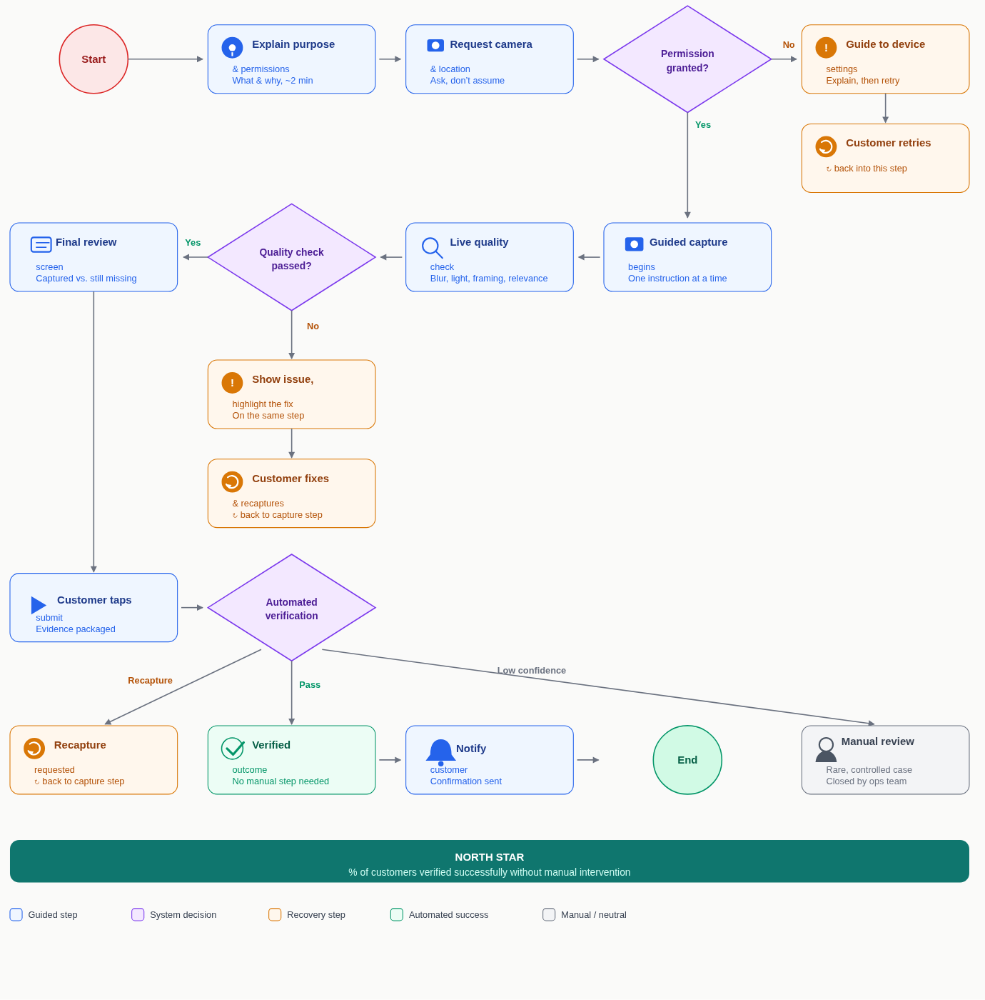

Fintech / Lending / Trust & Safety
Proof of Address, Without the Back-and-Forth
Redesigning premises verification so genuine customers can complete evidence capture independently, with clear guidance at every step.
The challenge
Verification was treating instruction failures like trust failures.
A legitimate loan applicant could fail premises verification not because they were hiding anything, but because the process was fragmented, ambiguous, and built around chasing people rather than guiding them. Incomplete evidence triggered re-submissions and manual follow-up days after the customer had left the flow.
End-to-end product ownership: problem definition, flow design, edge cases, MVP scope, and success metrics.
Catch evidence issues while a customer is still capturing, not after they have submitted.
Percentage of customers verified successfully without manual intervention.
Reframing
Guide the customer toward usable evidence instead of asking for more of it.
The obvious question was how to collect better evidence. That would have led to more photos, more angles, and more friction for honest customers. The better question was how to make “acceptable evidence” clear in the moment, then validate it before the customer has moved on.
Customer context
Evidence needs to fit the customer’s real premises.
Salaried
Premises: Home
Fast, low-effort confirmation through an entrance and a relevant interior view.
Work-from-home
Premises: Home and work area
Show relevance without asking customers to expose their entire home.
Self-employed
Premises: Shop or office
Focus on business entrance, signage, and operating setup.
Rented or shared home
Premises: Residence
Verify access to the declared address, not property ownership.
Flow design
Resolve each problem without breaking the customer’s momentum.
- 01
Explain
Set expectations before asking for camera or location access: why it is needed, what will be captured, and how long it takes.
- 02
Prepare
Give one instruction at a time with an on-screen reference instead of a checklist customers must interpret alone.
- 03
Capture and check
Detect blur, poor light, framing, and relevance during capture so a customer can fix the issue immediately.
- 04
Review and submit
Show what is complete and what is missing before submission, then route normal cases to automated verification.

Recovery design
Plan for real-world interruptions, not a perfect demo.
Permission denied
Explain purpose, retry, then guide to device settings or an allowed alternative path.
Low-quality capture
Identify the issue on the same step and give one specific correction, not a vague rejection.
Network interruption
Save completed progress securely and resume the upload when the customer reconnects.
Session abandoned
Resume from the last successful step rather than restarting the customer from zero.
MVP boundary
Validate the core loop before adding risk complexity.
Included in V1
- Persona-based evidence checklist
- Live guidance for blur, lighting, framing, and relevance
- Clear permission handling and save/resume
- Final review plus automated normal-case decisioning
Deliberately deferred
- Deep on-device fraud detection
- Support for every premises context from day one
- Backend complexity not needed to prove first-try completion
Success framework
Measure automation without hiding customer harm.
Completion rate, median time to complete, drop-off by step, and retry rate.
First-pass acceptance, quality failure, recapture, and mismatch rate.
Manual intervention, re-request rate, fraud signals, false decisions, privacy incidents, and device or network bias.
Rollout
Learn in stages, then expand responsibly.
Start with salaried residential customers and instrument each step.
Add work-from-home and self-employed contexts across varied devices and networks.
Tune evidence rules using live results before broadening to remaining cases.
The important design discipline was not asking for more proof. It was finding the minimum verifiable evidence for each customer, then moving every recoverable failure into the moment where it could be fixed without creating manual work.